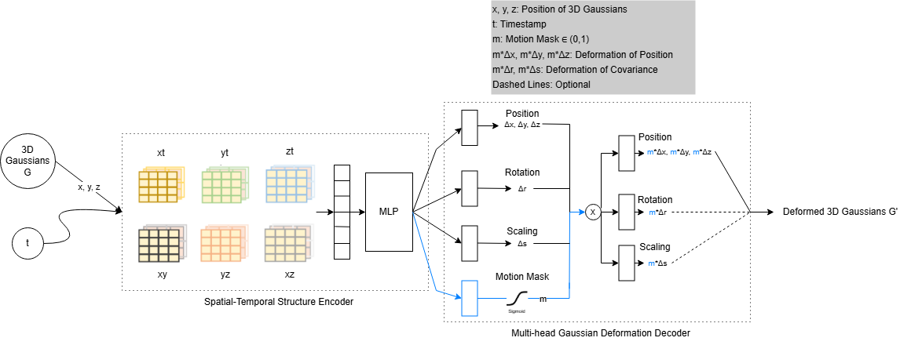
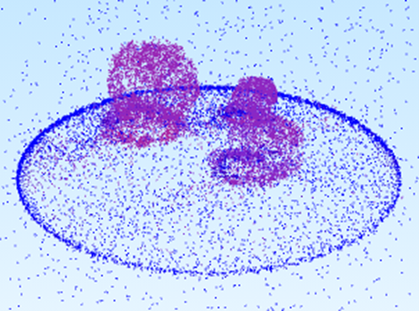
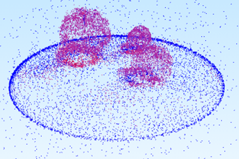
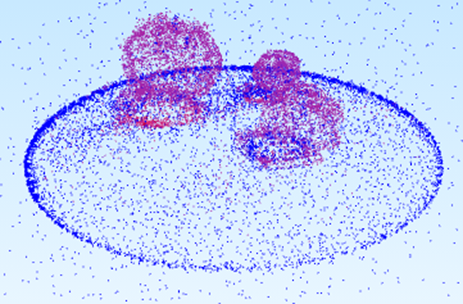
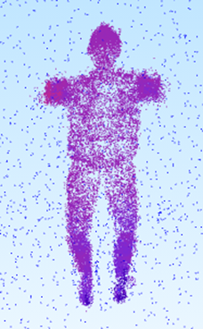
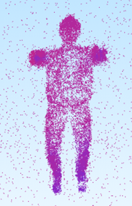
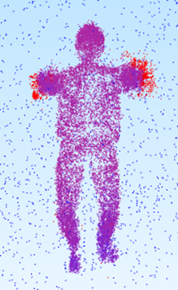

Lightweight unsupervised static–dynamic decomposition via a learned motion-mask gate inside the 4DGS deformation network.
1Mechanical Engineering 2Robotics Engineering 3Computer Science Engineering University of Michigan
4D Gaussian Splatting (4DGS) models dynamic scenes by coupling canonical Gaussians with a time-dependent deformation network — but applies deformation uniformly to every Gaussian, including those representing static regions.
In real scenes, only a small fraction is dynamic. Treating all Gaussians identically wastes representational capacity and prevents identifying which parts of the scene are actually moving.
Our solution: a lightweight motion-mask head that predicts a per-Gaussian soft gate mi(t) ∈ (0,1), controlling how much each Gaussian deforms — learned fully without supervision.
Results at a glance:
+0.28 dB PSNR (BouncingBalls) · +0.22 dB (JumpingJacks)
SSIM 0.9943 → 0.9947 · LPIPS-Alex −16%
This project studies motion-aware dynamic scene reconstruction built on top of the 4D Gaussian Splatting (4DGS) framework. The original 4DGS method models time-varying scenes through a HexPlane-based deformation network applied to canonical Gaussians, but does not explicitly distinguish which Gaussians should remain static and which should participate in motion.
To address this gap, we implement a lightweight motion-mask branch inside the deformation network. The mask predicts a per-Gaussian soft coefficient in [0, 1] that gates positional (and optionally scale/rotation) deformation, learned jointly with reconstruction and without any ground-truth motion supervision.
We further augment training with two regularization terms: a binarization loss that pushes the mask toward {0, 1}, and a static-deformation loss that penalizes large deformations on low-mask Gaussians. An earlier sparsity-only prototype proved unstable and was discarded; the final regularized formulation consistently improves reconstruction on strongly dynamic D-NeRF scenes.
On BouncingBalls, the best setting improves PSNR from 40.68 dB to 40.96 dB and SSIM from 0.9943 to 0.9947 while also producing interpretable soft motion localization. On JumpingJacks, PSNR improves from 35.40 dB to 35.62 dB. Experiments reveal a scene-dependent tradeoff between reconstruction quality and mask separability, motivating future work on adaptive regularization schedules.
In the standard 4DGS pipeline, deformation offsets (Δμi, Δsi, Δri) are applied to every Gaussian regardless of whether the corresponding region actually moves. We address this by adding a single linear layer gφ that maps the shared deformation hidden state hi(t) to a scalar pre-activation and applies a sigmoid:
The mask gates the positional update: μi(t) = μ0i + mi(t) · Δμi(t). When --motion-gate-rot-scale is enabled, scale and rotation are gated analogously. Opacity is intentionally left ungated, as it is managed by the 3DGS densification and pruning logic.
Because the mask is predicted from the shared feature rather than stored as a persistent per-Gaussian parameter, it requires no modification to Gaussian cloning, pruning, optimizer-state management, or checkpoint serialization — it is a drop-in addition of a single MLP head.
The motion mask head is appended to the deformation decoder. The shared hidden feature feeds four heads: position, rotation, scale, and motion mask.

The full training loss adds two motion-specific regularizers on top of the baseline 4DGS objective: ℒ = ℒimg + λgridℒgrid + λbinℒbin + λstaticℒstatic
Minimized when each mask value is at 0 or 1. Encourages a cleaner binary static/dynamic assignment.
Penalizes large positional deformations for Gaussians the mask identifies as static (mi ≈ 0).
The motion-mask formulation introduces an inherent ambiguity. The renderer does not observe the mask and deformation independently, but only their product:
As a result, multiple configurations can produce similar rendered images. For example, a small mask with a large deformation can be equivalent to a large mask with a small deformation. This creates an identifiability issue: image reconstruction alone cannot uniquely determine whether motion should be attributed to the mask or to the deformation magnitude.
The binarization and static-deformation losses are introduced to partially resolve this ambiguity by encouraging the mask to take on interpretable values and discouraging deformation in low-mask regions. However, this ambiguity is not fully eliminated and contributes to the observed gap between reconstruction quality and mask separability.
| Symbol | Meaning | Code variable |
|---|---|---|
| μ⁰ᵢ | Canonical Gaussian center | pc.get_xyz / rays_pts_emb[:,:3] |
| Δμᵢ(t) | Predicted positional deformation | dx |
| Fᵢ(t) | HexPlane spatiotemporal feature | grid_feature |
| hᵢ(t) | Shared hidden feature after projection | hidden |
| mᵢ(t) | Learned motion mask ∈ [0,1] | motion_mask |
| λ_bin | Binarization loss weight | motion_bin_lambda |
| λ_static | Static-deformation loss weight | static_deform_lambda |
To analyze mask behavior throughout training we added: per-iteration logging of mean, standard deviation, dynamic fraction, and fraction above 0.4 to a JSONL file; TensorBoard histograms of the mask distribution; red/blue PLY exports coloring dynamic Gaussians red and static ones blue; and a standalone comparison script (compare_motion_separation.py) that runs both conditions back-to-back and reports per-metric deltas.
All experiments use D-NeRF synthetic scenes. We focus on BouncingBalls (bouncing spheres against a static floor) and JumpingJacks (an animated figure), chosen for strong foreground motion. Training uses 20,000 total iterations, 3,000 coarse iterations, deformation depth 0, network width 64, and multi-resolution scales [1, 2], with PyTorch 1.13.1 and CUDA 11.6. Evaluation uses the provided metrics.py script reporting PSNR, SSIM, LPIPS-VGG, LPIPS-Alex, MS-SSIM, and D-SSIM.
We compare: Baseline (original 4DGS); Reg-A (λstatic = 1×10⁻³, λbin = 1×10⁻³); Reg-B (λstatic = 2×10⁻³, λbin = 1×10⁻³); Reg-C (λstatic = 2×10⁻³, λbin = 2×10⁻³); and Over-reg (λstatic = 1×10⁻², λbin = 1×10⁻³) as a collapse sanity check.
BouncingBalls (ground truth)
JumpingJacks (ground truth)
D-NeRF strongly dynamic synthetic scene. All three stable regularized variants improve over baseline. Reg-B achieves the highest PSNR (+0.28 dB); Reg-C achieves the best SSIM and LPIPS scores.
| Method | PSNR ↑ | SSIM ↑ | LPIPS-VGG ↓ | LPIPS-Alex ↓ | MS-SSIM ↑ |
|---|---|---|---|---|---|
| Baseline 4DGS | 40.68 | 0.9943 | 0.01536 | 0.00603 | 0.99540 |
| Reg-A (λ_s=1e-3, λ_b=1e-3) | 40.87 | 0.9945 | 0.01438 | 0.00563 | 0.99558 |
| Reg-B (λ_s=2e-3, λ_b=1e-3) | 40.96 | 0.9945 | 0.01442 | 0.00523 | 0.99562 |
| Reg-C (λ_s=2e-3, λ_b=2e-3) | 40.90 | 0.9947 | 0.01362 | 0.00509 | 0.99568 |
| Over-reg (λ_s=1e-2, λ_b=1e-3) | 40.72 | 0.9943 | 0.01559 | 0.00597 | 0.99531 |
Best per column in bold blue. Over-reg collapses to all-dynamic (dynamic fraction = 1.0), confirming the existence of a valid operating range.
| Method | Mean m | Std m | Dyn. frac. | Frac. m>0.4 |
|---|---|---|---|---|
| Early prototype (no reg.) | 0.248 | 0.064 | 0.000 | — |
| Reg-A | 0.185 | 0.190 | 0.012 | 0.216 |
| Reg-B | 0.218 | 0.249 | 0.260 | 0.388 |
| Reg-C | 0.140 | 0.214 | 0.049 | 0.262 |
| Over-reg | 0.999 | 0.002 | 1.000 | 1.000 |
D-NeRF human-motion synthetic scene. Reg-A and Reg-B both improve over baseline. Reg-C — which was best for BouncingBalls reconstruction — returns to near-baseline quality, illustrating scene-dependent behavior. The most robust single hyperparameter choice across both scenes is Reg-B (λstatic=2×10⁻³, λbin=1×10⁻³).
| Method | PSNR ↑ | SSIM ↑ | LPIPS-VGG ↓ | LPIPS-Alex ↓ | MS-SSIM ↑ |
|---|---|---|---|---|---|
| Baseline 4DGS | 35.40 | 0.9856 | 0.01995 | 0.01266 | 0.99362 |
| Reg-A (λ_s=1e-3, λ_b=1e-3) | 35.58 | 0.9864 | 0.01897 | 0.01233 | 0.99401 |
| Reg-B (λ_s=2e-3, λ_b=1e-3) | 35.62 | 0.9864 | 0.01895 | 0.01262 | 0.99400 |
| Reg-C (λ_s=2e-3, λ_b=2e-3) | 35.40 | 0.9859 | 0.01988 | 0.01314 | 0.99364 |
Best per column in bold blue. Reg-C returns to near-baseline quality on JumpingJacks, confirming that optimal regularization weights are scene-dependent.
Real-world dynamic scene from HyperNeRF (CHICKCHICKEN). Unlike the synthetic D-NeRF scenes, the proposed method does not consistently improve reconstruction quality. The baseline 4DGS remains slightly better on most primary image metrics, highlighting a gap between synthetic and real-world behavior.
| Method | PSNR ↑ | SSIM ↑ | LPIPS-VGG ↓ | LPIPS-Alex ↓ | MS-SSIM ↑ |
|---|---|---|---|---|---|
| Baseline 4DGS | 26.92 | 0.7969 | 0.3369 | 0.1854 | 0.9107 |
| Reg-A | 26.87 | 0.7968 | 0.3422 | 0.1862 | 0.9111 |
| Reg-B | 26.91 | 0.7967 | 0.3440 | 0.1903 | 0.9107 |
The proposed method does not improve PSNR or LPIPS on this real-world scene. However, mask diagnostics still show stronger static–dynamic separation under higher regularization.
Reg-B shows the clearest static/dynamic separation (highest dynamic fraction and mask spread). Reg-C, despite its better reconstruction scores, produces a more conservative and compressed mask — illustrating the reconstruction–separability tradeoff.
Red/blue PLY exports: red = high mask (dynamic), blue = low mask (static).

Reg-A: λs=1e-3, λb=1e-3

Reg-B: λs=2e-3, λb=1e-3

Reg-C: λs=2e-3, λb=2e-3

Reg-A alt view

Reg-B alt view

Reg-C alt view
The hyperparameters that maximize reconstruction quality do not match those that maximize motion-mask separability.
SDD-4DGS proposes a more explicit static–dynamic decomposition by assigning a persistent dynamic coefficient to each Gaussian and redesigning the representation accordingly. In contrast, our method predicts a motion coefficient from the shared deformation feature at each forward pass.
This difference leads to a tradeoff. SDD-4DGS reports larger and more consistent reconstruction improvements, likely due to its stronger structural decoupling. Our approach, however, is significantly simpler: it requires only a lightweight additional head and does not modify Gaussian storage, cloning, pruning, or optimizer state.
As a result, the proposed method can be integrated into existing 4DGS pipelines with minimal engineering overhead, but achieves more modest and scene-dependent reconstruction gains.
@article{ren2025motionaware4dgs,
author = {Ren, Yuan and Taylor, Ben and Swierad, Lucas},
title = {Motion-Aware Regularization via Soft Mask Gating for 4D Gaussian Splatting},
year = {2026},
note = {ROB 430 Final Project, University of Michigan},
url = {https://github.com/yuanren114514/ROB_430_Final_Project},
}